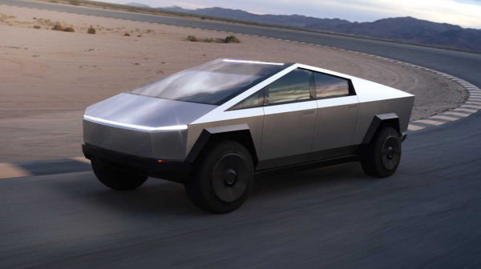

BETTER UTILITY THAN A TRUCK WITH MORE PERFORMANCE THAN A SPORTS CAR
Order now
EXOSKELETON
Cybertruck is built with an exterior shell made for
ultimate durability and passenger protection.
Starting with a nearly impenetrable exoskeleton, every
component is designed for superior strength and
endurance, from Ultra-Hard 30X Cold-Rolled stainless-steel
structural skin to Tesla armor glass.

ULTRA-HARD 30X COLD-ROLLED
STAINLESS STEEL
If there was something better, we’d use it. Help eliminate
dents, damage and long-term corrosion with asmooth monochrome
exoskeleton that puts the shell on the outside of the car and
provides you and your passengers maximum protection.
VERSATILE UTILITY
With up to 3,500 pounds of payload capacity and adjustable air suspension, Cybertruck is the mostpowerful
tool we have ever built,
engineered with 100 cubic feet of exterior, lockable storage including a magic tonneau cover that is
strong enough to stand on.—
With up to 3,500 pounds of payload capacity and adjustable air suspension, Cybertruck is the most
VAULT-LIKE STORAGE
Space for your toolbox, tire and Cyberquad, with room to spare. Utilize 100 cubic feet of exterior,
lockable storage — including the under-bed, frunk and sail pillars.
PERFORMANCE AND EFFICIENCY
Now entering a new class of strength, speed and versatility—only possible with an all-electric design.
The
powerful drivetrain and low center of gravity provides extraordinary traction control and
torque—enabling
acceleration from 0-60 mph in as little as 2.9 seconds and up to 500 miles of range.